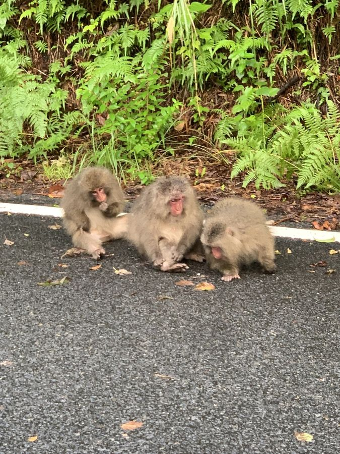

CASE 01
昼のカラー画像は、ほぼ問題なく当てる
昼 / COLOR正解
正解: japanese_macaque（ニホンザル）・昼
© Daniel J. Layton, CC BY ・ iNaturalist 249299486
正解ラベル japanese_macaque ／ 頭数 1（※後述） ／ time_of_day: day
iter1-single ・ Claude Haiku 4.5 ・ 入力 2,112 tok / 出力 207 tok
japanese_macaque confidence 0.95 ・ count 3 ・ needs_escalation true
3頭のニホンザルが道路上に出現。赤い顔面部が特徴的で、グループで移動中。人間の生活空間への侵入のため、エスカレーションが必要。
gemini3-base ・ Gemini 3.8 Flash ・ 入力 1,278 tok / 出力 68 tok
japanese_macaque confidence 0.99 ・ count 3
道路上にニホンザル3頭が確認されます。
読みどころ: 種だけでなく頭数と状況を日本語で書いてくる — 検出器には原理的にできない部分です。一方この写真の正解ラベルの頭数は 1。評価セットの count は取得時に全件 1 で入っており、AI の「3頭」の方が正しい。これは正解データ側の限界で、頭数の精度は現状この評価では正しく測れていません。